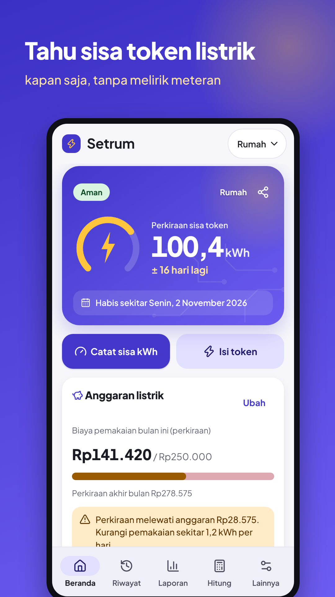
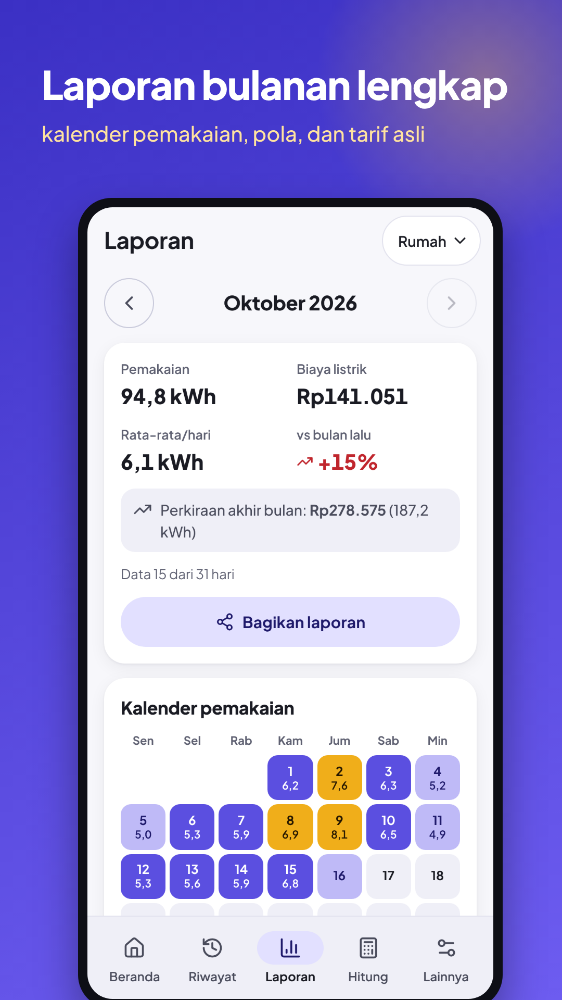
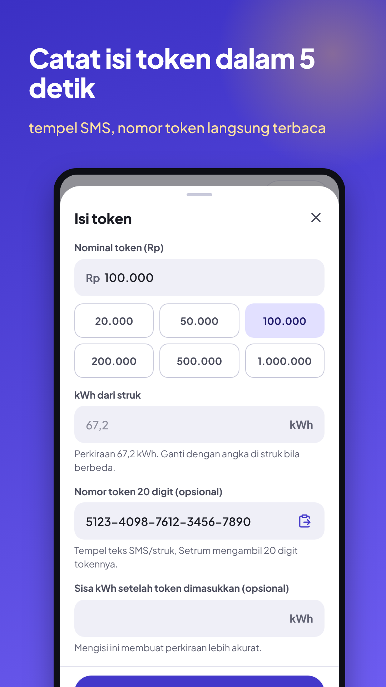
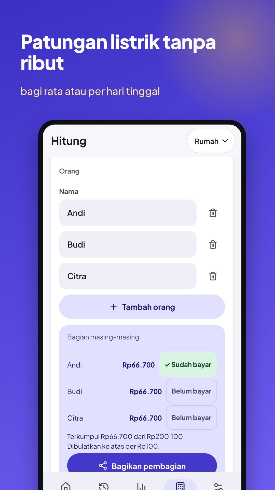
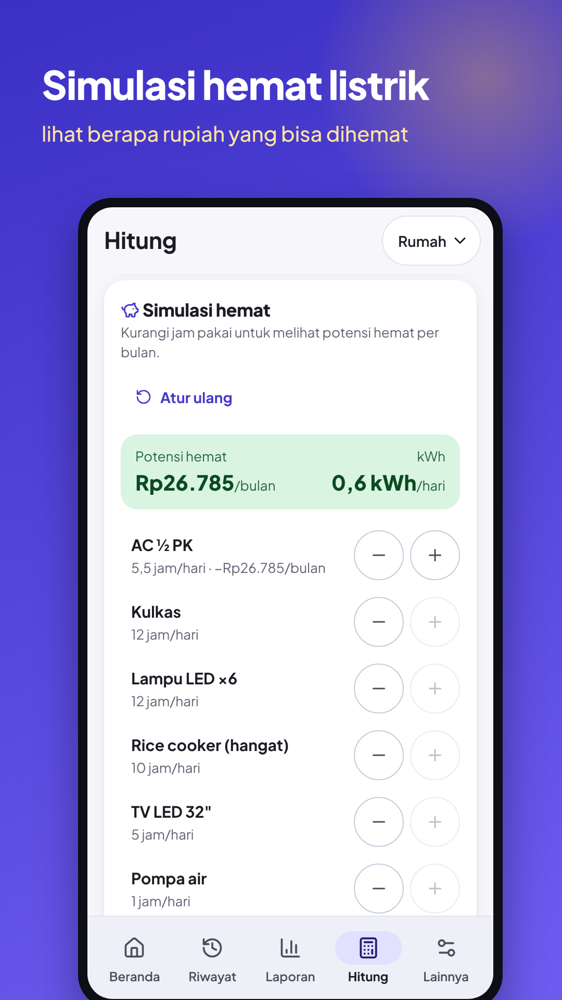
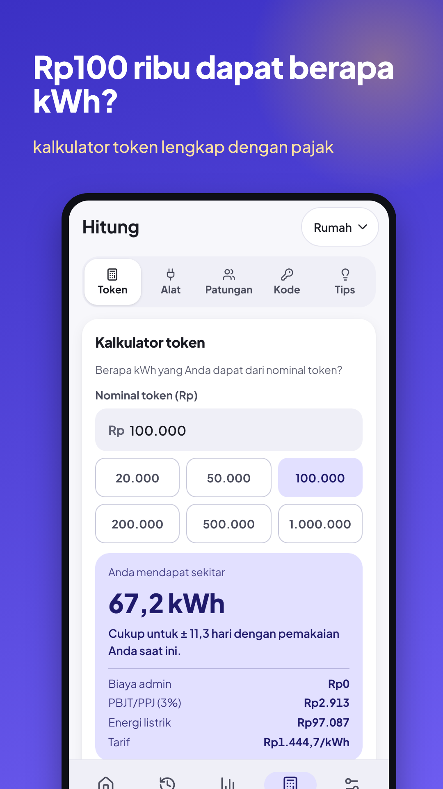

Sisa token & tanggal habis
Perkiraan sisa kWh saat ini, berapa hari lagi, dan tanggal token habis, dengan status Aman, Menipis, atau Segera isi.
Setrum menghitung pemakaian kWh harianmu, memperkirakan sisa token saat ini, dan memprediksi tanggal token habis. Tinggal catat angka di meteran sesekali. Gratis, offline, tanpa akun, tanpa iklan.

Perkiraan sisa kWh saat ini, berapa hari lagi, dan tanggal token habis, dengan status Aman, Menipis, atau Segera isi.
Pengingat harian untuk mencatat dan peringatan saat token menipis, jadi tidak kaget tengah malam.
Rp50 ribu, Rp100 ribu, dan seterusnya dapat berapa kWh, lengkap dengan rincian PBJT/PPJ, PPN, dan biaya admin, plus saran nominal beli.
AC, kulkas, rice cooker, pompa air, dan lainnya. Lihat alat paling boros dan simulasikan penghematan dalam rupiah.
Grafik pemakaian 14/30 hari, kalender pemakaian, anggaran bulanan, tren 6 bulan, dan rekap belanja token.
Rumah, kos, toko dalam satu aplikasi. Bagi biaya token dengan teman kos dan bagikan status lewat WhatsApp.
Tempel SMS atau struk, nomor token 20 digit langsung terbaca dan bisa disalin kapan saja.
Sisa kWh dan hari tersisa langsung di layar HP, dengan tombol catat cepat.
Tanpa akun, tanpa iklan, tanpa pelacak. Data hanya di HP kamu. Ekspor CSV dan cadangan JSON untuk pindah HP.





Hitung langsung di browser untuk daya rumahmu (900 sampai 6.600 VA ke atas), lengkap dengan pajak penerangan daerah dan biaya admin, plus perkiraan berapa hari token akan bertahan.
Catat angka sisa kWh yang tampil di meteran sesekali, misalnya tiap pagi. Dari dua catatan atau lebih, Setrum menghitung rata-rata pemakaian harian lalu memperkirakan sisa token saat ini dan tanggal token habis.
Tergantung daya dan pajak penerangan daerahmu. Untuk 1.300 VA dengan tarif Rp1.444,70 per kWh dan PBJT/PPJ 3% tanpa biaya admin, Rp100.000 kira-kira menjadi 67,2 kWh. Hitung untuk dayamu di kalkulator token listrik.
Sisa kWh biasanya tampil di layar meteran. Beberapa merek punya kode cek, misalnya Hexing 801, Star 07, dan Glomet 37 lalu Enter. Daftar kode juga ada di dalam Setrum.
Tidak. Setrum adalah buku catatan pintar yang bekerja offline. Setrum tidak terhubung dengan perusahaan listrik mana pun dan tidak memproses pembayaran.
Setrum tidak butuh akun, tanpa iklan dan tanpa pelacak. Semua catatan tersimpan hanya di HP kamu. Satu-satunya yang dikirim adalah pesan masukan yang kamu kirim sendiri.
Ya, gratis tanpa pembelian dalam aplikasi, tersedia di Google Play untuk Android.
Setrum adalah aplikasi independen dan tidak berafiliasi dengan perusahaan listrik mana pun. Tarif bawaan merupakan perkiraan dan dapat disesuaikan dengan struk.
Setrum tells you how much prepaid electricity credit you have left at any moment, and warns you before the meter alarm starts beeping. Note the kWh shown on your meter now and then, and Setrum works out your daily use, estimates your current credit and predicts the day it runs out.
It also includes a token calculator (how many kWh an amount buys, with lighting tax, VAT and admin fee), an appliance cost calculator, monthly reports, multiple meters, bill splitting and a home-screen widget. Free, offline, no account, no ads. Built for Indonesian prepaid electricity meters.